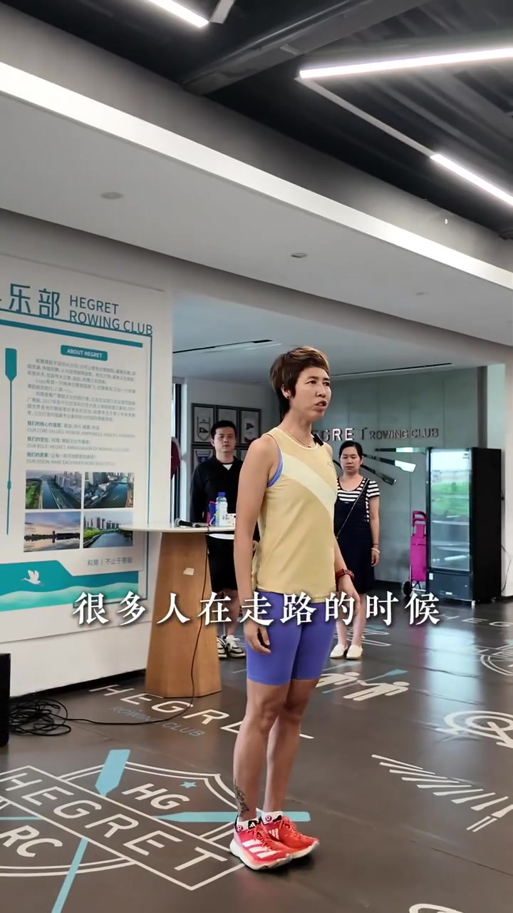
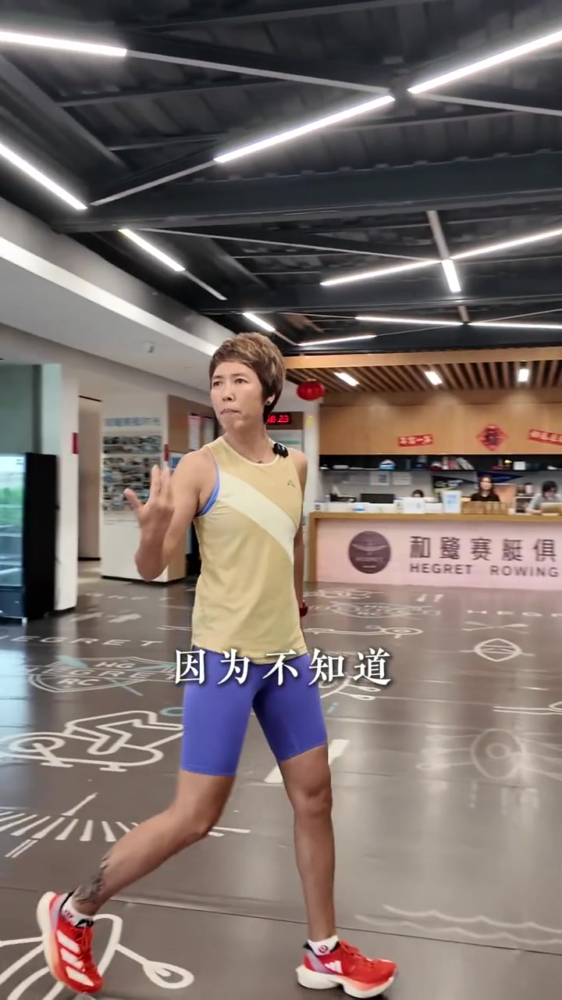
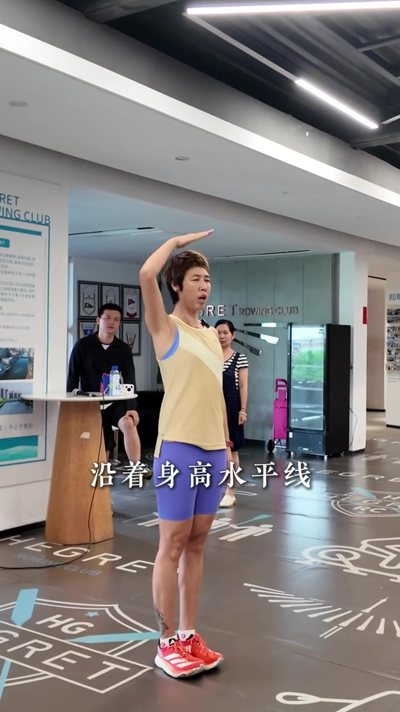
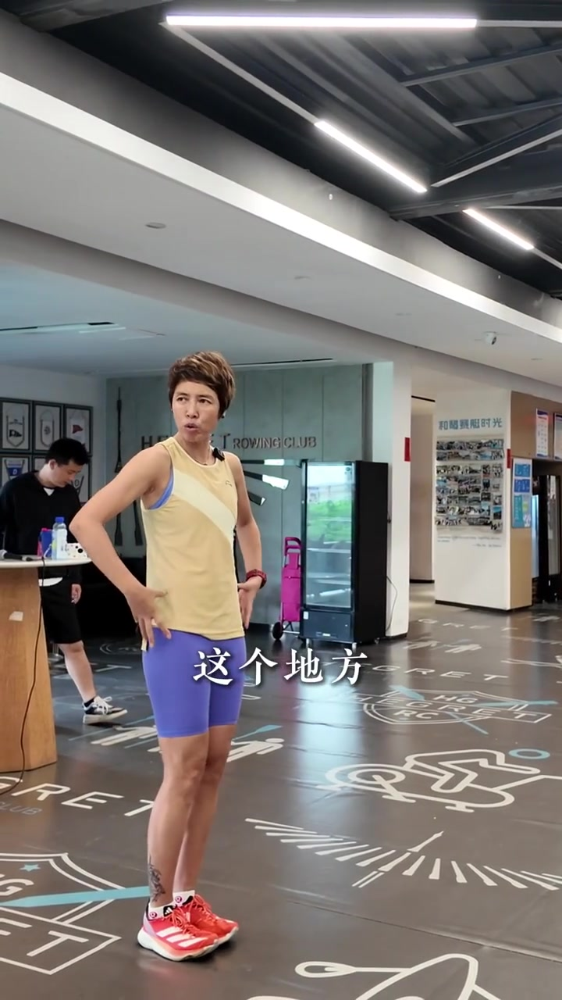
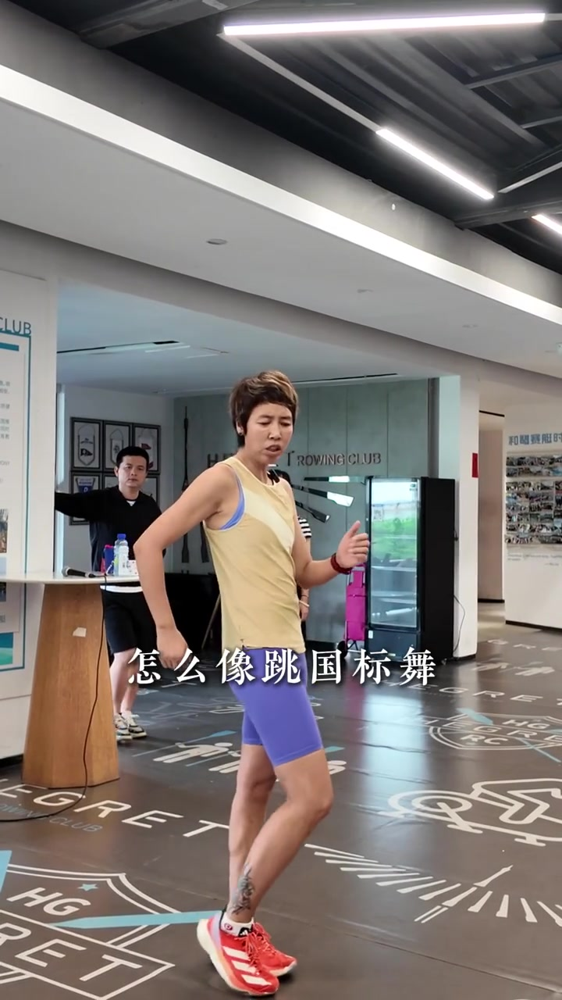
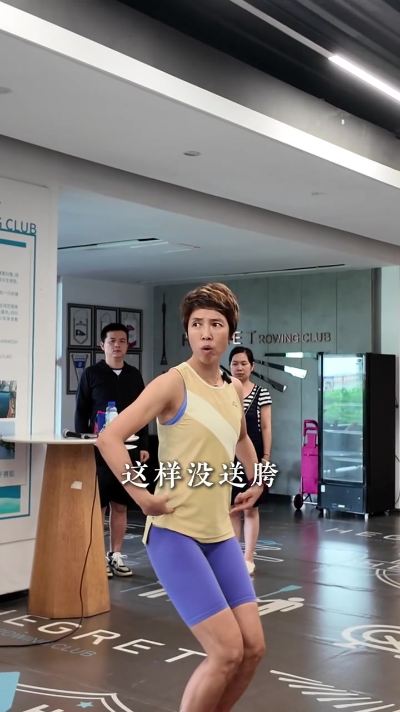
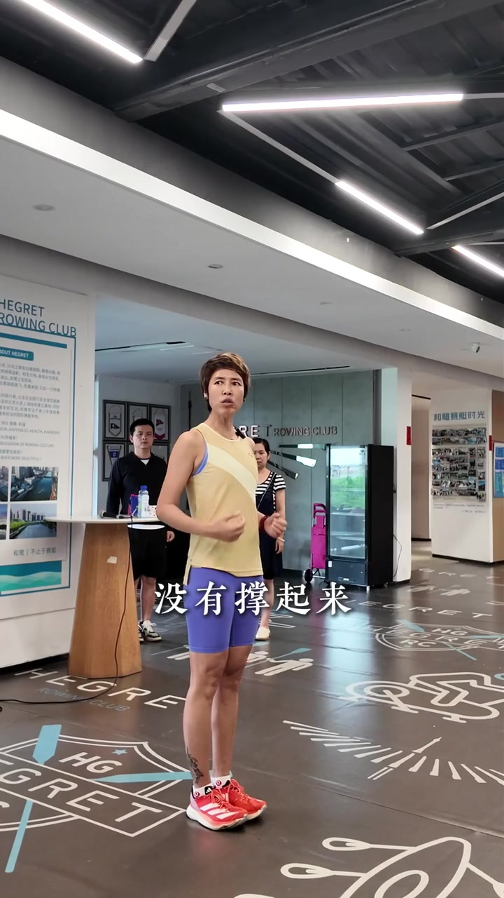
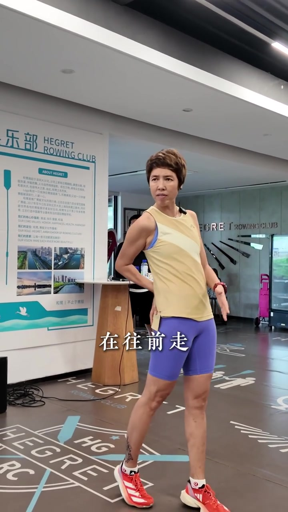

走路挺拔，一跑就垮
教练站在室内赛艇俱乐部开场：很多人走路时腰背很挺，一跑起来却突然垮下去。她把原因指向——不知道正确的送髋姿势。画面字幕先出现「很多人在走路的时候」，再切到「因为不知道」。
「很多人在走路的时候很挺拔，但是呢一跑的时候一跑就……是为什么？因为不知道什么姿势是正确的。」
说明：Whisper 保留原识别；下文叙述结合画面字幕校正（「口字」→姿势、「深岗」→身高、「送跨/送宽」→送髋/送胯、「跳国标我」→跳国标舞、「囤」→臀）。标题用「送髋」，画面叠字偶见「送胯」，所指为同一髋部前送动作。

[00:01] 开场：教练站定开讲，字幕「很多人在走路的时候」。
Opening: the coach stands and begins, subtitle “a lot of people, when walking.”

[00:06] 走动讲解「因为不知道」——正确姿势尚未建立。
Walking while explaining “because you don't know” — the correct posture isn't built yet.
身高水平线与重心上提
核心判断先抛出：跑步是走路的延伸。走路时沿着「身高水平线」往前移动；跑的时候也一样——重心提起来，髋部「这个地方」绝对不能向下沉。她抬手在头顶比一条水平线，再双手点向髋区。
「跑步是走路的延伸……沿着身高水平线往前移动走……重心提起来的，这个地方绝对没有向下下沉。」

[00:11] 手掌贴头顶示意「沿着身高水平线」前移，不掉高度。
A palm on the head shows moving forward “along the height line” without losing height.

[00:17] 双手点向髋区：「这个地方」不许下沉。
Both hands point to the hip area: “this place” must not sink.
送髋不是跳国标舞
进入定义段：什么叫送髋？很多人以为要像跳国标舞那样左右扭胯。教练立刻摆出夸张舞步示范，然后干脆否定——「不是的」。
「什么叫送髋？很多人认为送髋怎么像跳国标舞这样送髋吗？不是的。」

[00:22] 反面示范：夸张扭胯像跳国标舞——这不是跑步送髋。
Counter-demo: exaggerating the hip swing like ballroom dancing — that's not running hip drive.
撑起来就是送髋，垮下去就没送
她用站姿对比：髋部撑住、向前送出＝已经送髋；塌下去、重心掉落＝没送髋。口播连着切换「送了 / 没送」，并总结——跑的时候撑起来就已经送髋了；没有撑起来，一跑就垮。
「现在我就送髋了……这样没送髋……跑的时候撑起来就已经送髋了。没有撑起来，一跑就这样。」

[00:27] 塌髋半蹲对照：字幕「这样没送胯」——髋未前送。
Collapsed-hip half-squat comparison: subtitle “no hip drive this way” — the hips never move forward.

[00:33] 「没有撑起来」：重心一掉，跑步姿态立刻变形。
“Not braced”: the moment the center of gravity drops, the running form collapses.
像有人一直推着臀往前走
收尾给体感口诀：感觉有人用手时刻推着你的臀，再往前走、这里再往前走；千万不要垮成刚才那种模式。她侧身前倾，左手前指，右手扶髋，强调「持续向前」而不是左右晃。
「感觉有人用手时刻推着你的臀，再往前走……千万不要这样。」

[00:38] 体感示范：像被持续前推，「在往前走」而不是下沉扭胯。
Sensation demo: as if constantly pushed forward — “moving ahead” rather than sinking and twisting the hips.